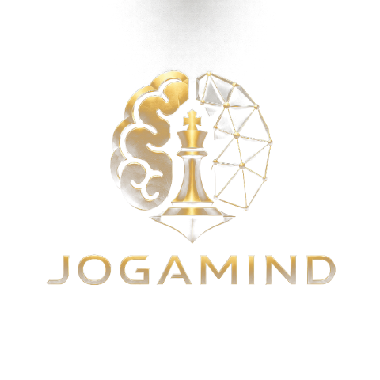

{{ practicesSub }}
{{ ideasSub }}
{{ iaSub }}

Prototipo funcional. Toca ▶ una sesión para abrir el reproductor con respiración guiada, prueba la afirmación, y navega entre Hoy · Sesiones · Progreso.